11 Miscellaneous Topics
This chapter covers two broad areas. The first half introduces a selection of
ggplot2 geoms that have not appeared in earlier chapters, expanding your
visualisation toolkit. The second half presents classic case studies in data
visualisation: phenomena that plots reveal far better than numbers alone, and
enduring principles for creating effective graphics.
11.1 Additional geoms
Earlier chapters focused on the most frequently used geoms. The following geoms complete the picture and are well worth knowing, even if they appear less often in everyday work.
11.1.1 Reference lines: geom_hline(), geom_vline(), geom_abline()
These three geoms add straight reference lines to a plot. They take no data
argument — the lines are defined by their intercept and slope, not by
observations in a data frame.
| Geom | Argument(s) | Draws |
|---|---|---|
geom_hline() |
yintercept |
Horizontal line at \(y = c\) |
geom_vline() |
xintercept |
Vertical line at \(x = c\) |
geom_abline() |
intercept, slope |
Line \(y = a + bx\) |
A common use is to mark a threshold or reference value. The following plot of city fuel economy by engine displacement adds a dashed horizontal line at the mean, making it easy to see which engine sizes are above and below average:
mean_hwy <- mean(mpg$hwy)
ggplot(mpg, aes(displ, hwy)) +
geom_point(alpha = 0.4) +
geom_hline(yintercept = mean_hwy, linetype = "dashed", colour = "firebrick") +
labs(x = "Engine displacement (litres)",
y = "Highway fuel economy (mpg)")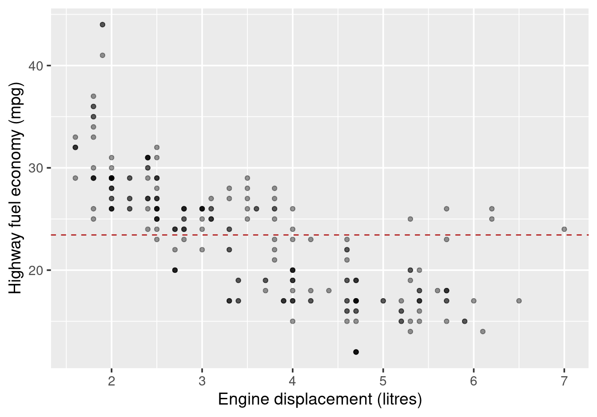
Figure 11.1: Highway fuel economy vs engine displacement, with mean marked.
geom_abline() is particularly useful for a line of equality (slope 1,
intercept 0) when comparing two measurements on the same scale — for example,
city versus highway fuel economy:
ggplot(mpg, aes(cty, hwy)) +
geom_point(alpha = 0.4) +
geom_abline(intercept = 0, slope = 1, colour = "steelblue") +
labs(x = "City fuel economy (mpg)", y = "Highway fuel economy (mpg)")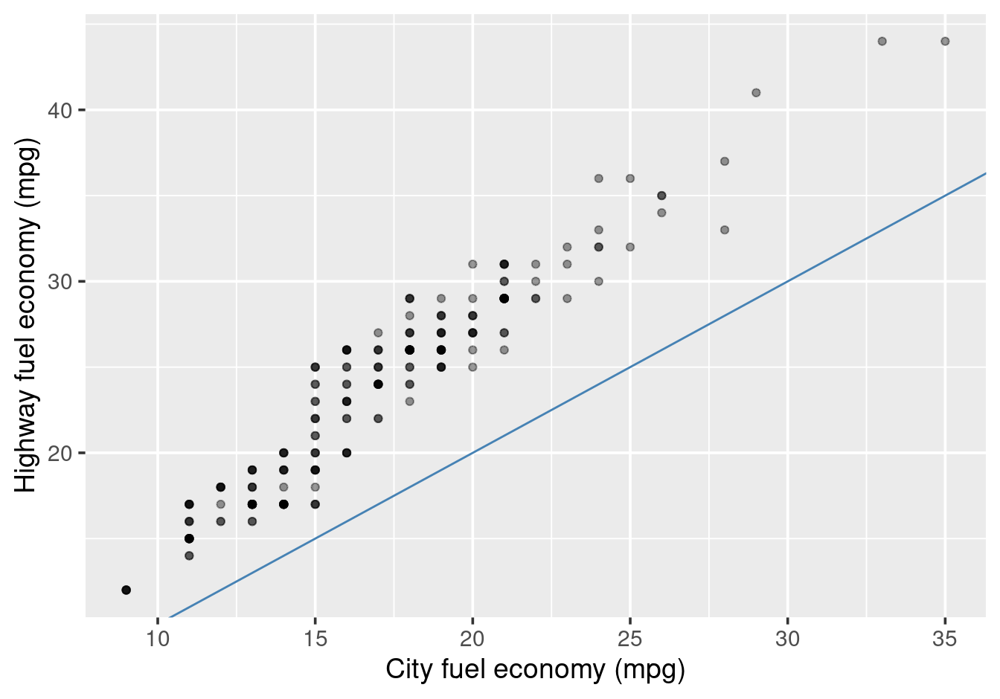
Figure 11.2: City vs highway fuel economy with the line of equality.
All points above the line have better highway economy than city economy — which is true of nearly every vehicle in the dataset.
11.1.2 geom_violin()
A violin plot is a hybrid of a boxplot and a kernel density plot. Like a boxplot, it shows the distribution of a continuous variable within groups; unlike a boxplot, it reveals the full shape of the distribution via a smoothed density estimate mirrored on both sides. Violins are widest where data are most dense, so a bimodal group shows two bulges — information that a boxplot’s quartile box cannot convey.
ggplot(mpg, aes(class, hwy)) +
geom_violin(fill = "steelblue", alpha = 0.6) +
labs(x = "Vehicle class", y = "Highway fuel economy (mpg)")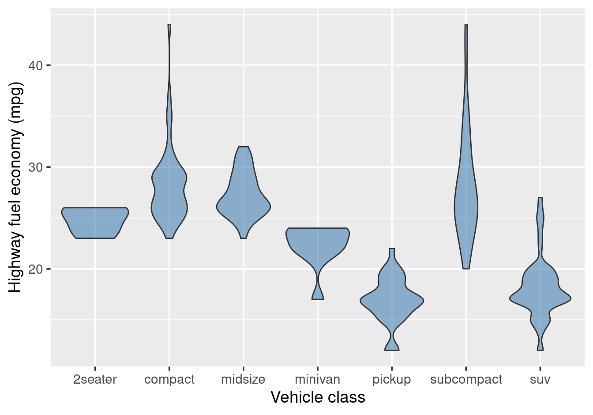
Figure 11.3: Distribution of highway fuel economy by vehicle class (violin).
It is common to overlay a boxplot on the violin to show the summary statistics alongside the distributional shape:
ggplot(mpg, aes(class, hwy)) +
geom_violin(fill = "steelblue", alpha = 0.4) +
geom_boxplot(width = 0.15, outlier.shape = NA) +
labs(x = "Vehicle class", y = "Highway fuel economy (mpg)")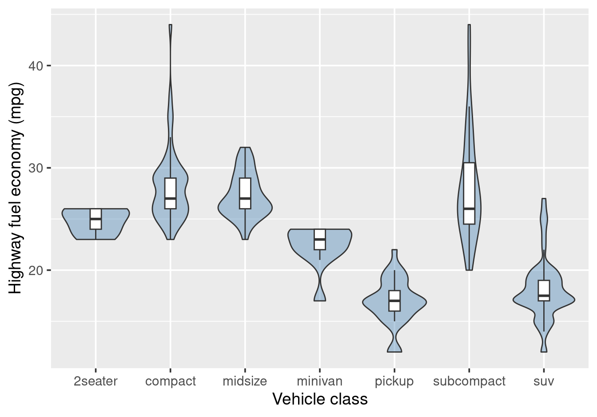
Figure 11.4: Violin plot with overlaid boxplot.
Setting outlier.shape = NA suppresses the boxplot’s outlier points, since
the violin already shows the full distribution.
11.1.3 geom_text() and geom_label()
These geoms annotate individual observations with text. Both require an
additional label aesthetic. geom_label() draws a filled rectangle behind
the text, making it easier to read against a busy background.
# A few cars to highlight
highlight <- mpg |>
filter(class == "2seater" |
(manufacturer == "honda" & model == "civic")) |>
distinct(manufacturer, model, .keep_all = TRUE)
ggplot(mpg, aes(displ, hwy)) +
geom_point(alpha = 0.3) +
geom_point(data = highlight, colour = "firebrick", size = 2) +
geom_label(
data = highlight,
aes(label = model),
size = 3,
nudge_y = 1.8
) +
labs(x = "Engine displacement (litres)", y = "Highway economy (mpg)")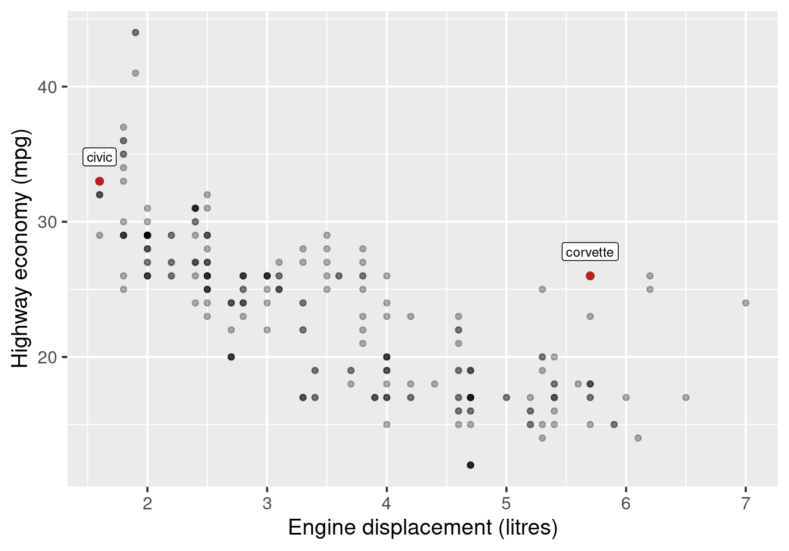
Figure 11.5: Fuel economy vs engine size, with selected models labelled.
The nudge_x and nudge_y arguments shift labels away from their points to
reduce overlap. For datasets where many labels would still clash, the ggrepel
package provides geom_text_repel() and geom_label_repel(), which
automatically reposition labels to avoid collision.
11.1.4 geom_raster()
geom_raster() fills a rectangular grid of cells, mapping a variable to the
fill colour of each cell. It is the ggplot2 equivalent of a heatmap:
the x and y aesthetics give the cell centres, and fill gives the value.
The built-in faithfuld dataset is a 2D kernel density estimate of the Old
Faithful geyser data, stored on a regular grid of eruption duration and waiting
time values:
ggplot(faithfuld, aes(waiting, eruptions)) +
geom_raster(aes(fill = density)) +
scale_fill_viridis_c() +
labs(x = "Waiting time (minutes)", y = "Eruption duration (minutes)",
fill = "Density")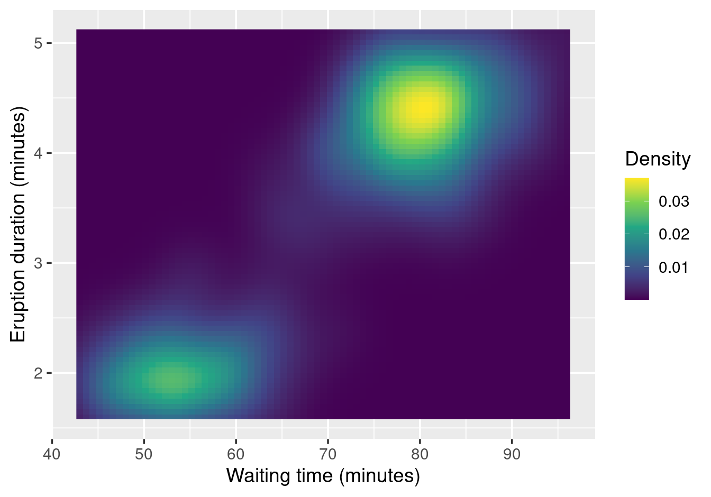
Figure 11.6: 2D kernel density of Old Faithful eruptions displayed with geom_raster().
The two clusters correspond to Old Faithful’s two eruption modes: short eruptions after a short wait, and long eruptions after a longer wait.
A very common application of geom_raster() is displaying a correlation
matrix:
cor_long <- mtcars |>
select(mpg, cyl, disp, hp, wt) |>
cor() |>
as.data.frame() |>
rownames_to_column("var1") |>
pivot_longer(-var1, names_to = "var2", values_to = "correlation")
ggplot(cor_long, aes(var1, var2, fill = correlation)) +
geom_raster() +
geom_text(aes(label = round(correlation, 2)), size = 3) +
scale_fill_gradient2(low = "steelblue", mid = "white", high = "firebrick",
midpoint = 0, limits = c(-1, 1)) +
labs(x = NULL, y = NULL, fill = "Correlation") +
theme(axis.text.x = element_text(angle = 45, hjust = 1))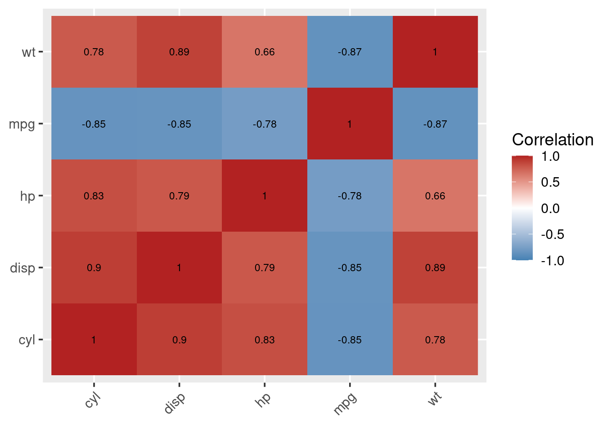
Figure 11.7: Correlation matrix of selected mtcars variables.
11.1.5 geom_density_2d()
geom_density_2d() draws contour lines of a 2D kernel density estimate over a
scatterplot. It shows where observations cluster without relying on point
overplotting or opacity:
library(palmerpenguins)##
## Attaching package: 'palmerpenguins'## The following objects are masked from 'package:datasets':
##
## penguins, penguins_rawpenguins |>
filter(!is.na(bill_length_mm), !is.na(bill_depth_mm)) |>
ggplot(aes(bill_length_mm, bill_depth_mm)) +
geom_point(alpha = 0.3) +
geom_density_2d(colour = "steelblue") +
labs(x = "Bill length (mm)", y = "Bill depth (mm)")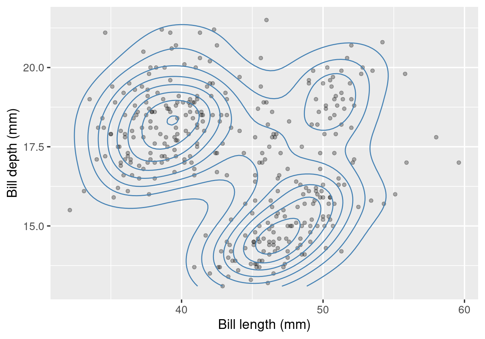
Figure 11.8: Bill length vs depth in Palmer penguins, with 2D density contours.
geom_density_2d_filled() shades the regions between contours, which can be
easier to read:
penguins |>
filter(!is.na(bill_length_mm), !is.na(bill_depth_mm)) |>
ggplot(aes(bill_length_mm, bill_depth_mm)) +
geom_density_2d_filled(alpha = 0.7) +
geom_point(size = 0.6) +
labs(x = "Bill length (mm)", y = "Bill depth (mm)", fill = "Density level")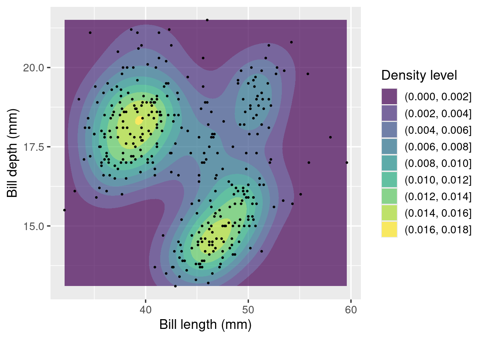
Figure 11.9: Filled 2D density contours for Palmer penguin bill measurements.
11.1.6 geom_smooth(method = "glm")
In Chapter 7, geom_smooth() was introduced with method = "lm"
for linear fits. Setting method = "glm" fits a generalised linear model
instead. Combined with method.args = list(family = binomial), this produces a
logistic regression curve — appropriate when the outcome is binary (0/1).
In MAS2903 Regression, you will learn that logistic regression models the
probability of a binary outcome as a sigmoid (S-shaped) function of predictors.
geom_smooth() can overlay this fitted curve directly on a plot:
ggplot(mtcars, aes(hp, am)) +
geom_jitter(height = 0.05, width = 0, alpha = 0.6) +
geom_smooth(
method = "glm",
method.args = list(family = binomial),
se = FALSE,
colour = "steelblue"
) +
labs(x = "Horsepower", y = "P(manual transmission)")## `geom_smooth()` using formula = 'y ~ x'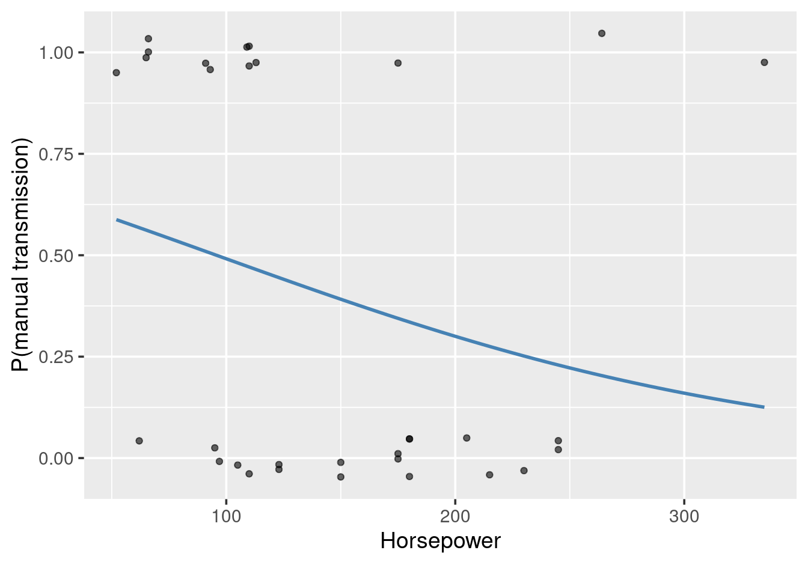
Figure 11.10: Probability of manual transmission by horsepower, with logistic regression curve.
geom_jitter() adds a small vertical offset to prevent the binary points from
all lying on \(y = 0\) or \(y = 1\). The sigmoid curve shows that higher-powered
cars are substantially less likely to have a manual gearbox.
11.2 Case studies and principles
11.2.1 Simpson’s paradox
Simpson’s paradox occurs when a trend present within separate groups disappears or reverses when those groups are combined. It is a powerful reminder that aggregated data can tell a systematically misleading story.
The Palmer penguin dataset provides a clean illustration. When bill length and bill depth are plotted for all penguins together, the relationship appears negative:
penguins |>
filter(!is.na(bill_length_mm), !is.na(bill_depth_mm)) |>
ggplot(aes(bill_length_mm, bill_depth_mm)) +
geom_point(alpha = 0.4) +
geom_smooth(method = "lm", se = FALSE) +
labs(x = "Bill length (mm)", y = "Bill depth (mm)")## `geom_smooth()` using formula = 'y ~ x'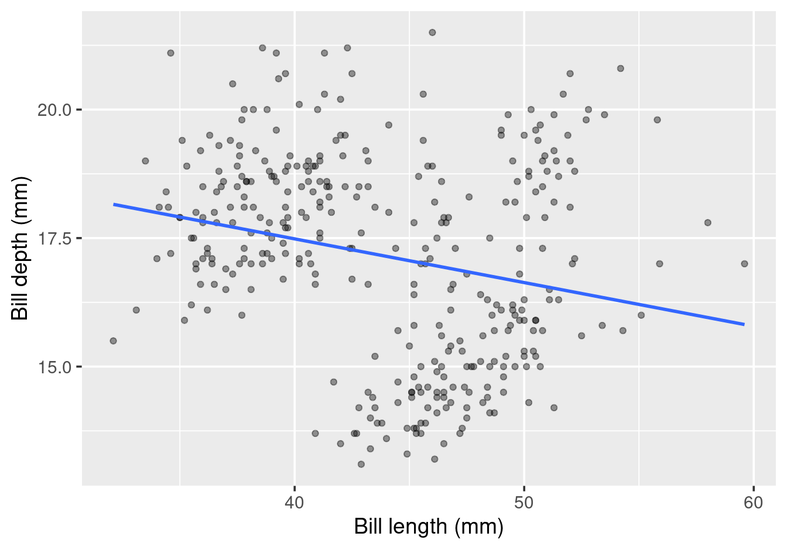
Figure 11.11: Bill length vs bill depth across all penguin species — a negative trend.
Yet within each species, the relationship is clearly positive:
penguins |>
filter(!is.na(bill_length_mm), !is.na(bill_depth_mm)) |>
ggplot(aes(bill_length_mm, bill_depth_mm, colour = species)) +
geom_point(alpha = 0.5) +
geom_smooth(method = "lm", se = FALSE) +
labs(x = "Bill length (mm)", y = "Bill depth (mm)", colour = "Species")## `geom_smooth()` using formula = 'y ~ x'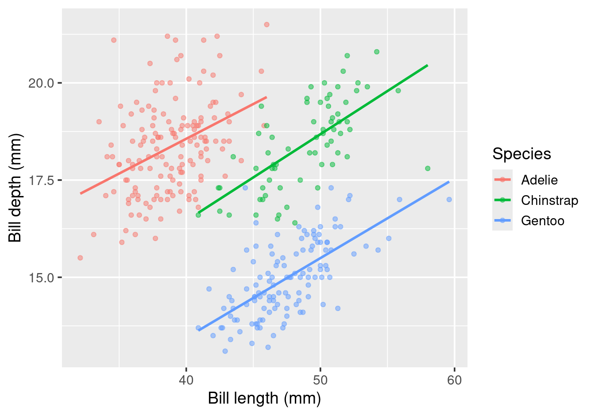
Figure 11.12: Bill length vs bill depth within each penguin species — a positive trend in every group.
The reversal is driven by species acting as a confounding variable. Gentoo penguins are large-billed but have relatively shallow bills for their size, while Adélie penguins are the opposite. When species groups are merged, Gentoo’s long, shallow bills pull the overall slope negative, masking the within-group positive trend.
Whenever you see a trend in aggregated data, ask: “Is there a grouping variable that could be driving this?” Disaggregating by that variable is often the fastest way to find out, and a well-chosen colour aesthetic is all it takes.
11.2.2 Correlation does not imply causation
Two variables can be strongly correlated for reasons that have nothing to do with one causing the other. The statistician Tyler Vigen catalogued hundreds of such spurious correlations at tylervigen.com/spurious-correlations. The most famous example finds that US per capita cheese consumption and the number of people who died by becoming tangled in their bedsheets tracked each other almost perfectly over a ten-year period:
# Data from tylervigen.com/spurious-correlations
cheese_bed <- tibble(
year = 2000:2009,
cheese_lbs = c(29.8, 30.1, 30.5, 30.6, 31.3,
31.7, 32.6, 33.1, 32.7, 32.8),
bedsheet_deaths = c(327, 456, 509, 497, 596,
573, 661, 741, 809, 717)
)
ggplot(cheese_bed, aes(cheese_lbs, bedsheet_deaths)) +
geom_point(size = 3) +
geom_smooth(method = "lm", se = FALSE) +
geom_text(aes(label = year), vjust = -0.8, size = 3) +
labs(
x = "US per capita cheese consumption (lbs)",
y = "Deaths by bedsheet tangling",
title = "Correlation = 0.95 (to 2 d.p.)",
caption = "Source: tylervigen.com/spurious-correlations"
)## `geom_smooth()` using formula = 'y ~ x'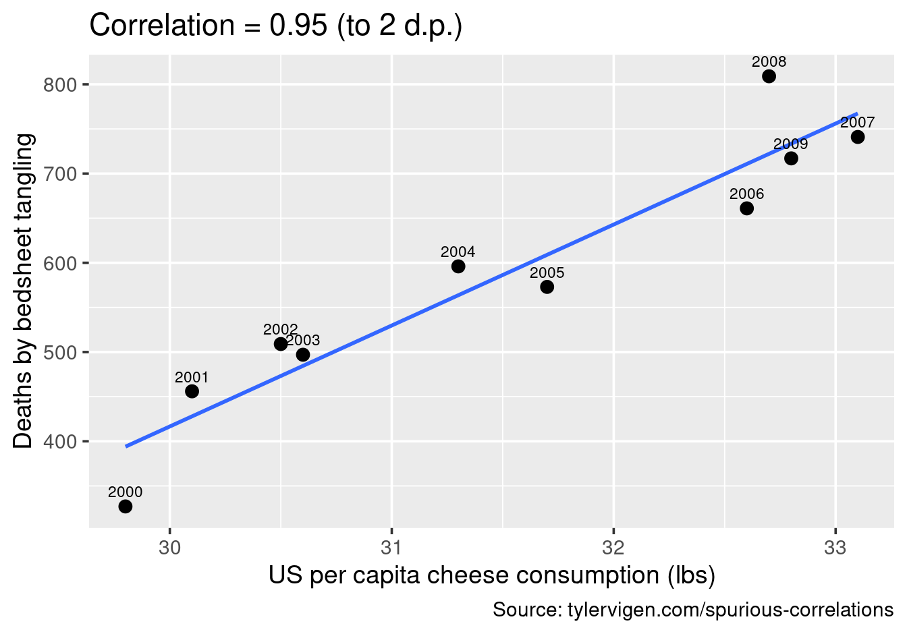
Figure 11.13: US cheese consumption vs deaths by bedsheet tangling: a spurious correlation.
Both series share the same broad upward trend over the decade. This is common-cause correlation: a third factor (population growth, changing dietary habits, ageing demographics) drives both series independently. Eating more cheese does not make bedsheets more dangerous.
The lesson: a convincing scatterplot with a tight linear fit is no substitute
for a causal argument grounded in subject-matter knowledge. Always ask whether
the relationship makes mechanistic sense. The geoms involved here — geom_point(),
geom_smooth(), and geom_text() — are all familiar, but the relationship
they depict is pure coincidence.
11.2.3 Numerical summaries alone are insufficient
Summary statistics — means, standard deviations, correlations — collapse a
dataset into a few numbers and inevitably lose information. The canonical
demonstration is Anscombe’s quartet (1973): four datasets with identical
means, standard deviations, and correlations, but radically different visual
structures. The datasauRus package extends this idea dramatically with the
datasaurus_dozen: thirteen datasets that share the same summary statistics but
look completely different when plotted.
library(datasauRus)
datasaurus_dozen |>
group_by(dataset) |>
summarise(
mean_x = round(mean(x), 1),
mean_y = round(mean(y), 1),
sd_x = round(sd(x), 1),
sd_y = round(sd(y), 1),
cor = round(cor(x, y), 2),
.groups = "drop"
) |>
head(6)## # A tibble: 6 × 6
## dataset mean_x mean_y sd_x sd_y cor
## <chr> <dbl> <dbl> <dbl> <dbl> <dbl>
## 1 away 54.3 47.8 16.8 26.9 -0.06
## 2 bullseye 54.3 47.8 16.8 26.9 -0.07
## 3 circle 54.3 47.8 16.8 26.9 -0.07
## 4 dino 54.3 47.8 16.8 26.9 -0.06
## 5 dots 54.3 47.8 16.8 26.9 -0.06
## 6 h_lines 54.3 47.8 16.8 26.9 -0.06Despite the identical statistics, the datasets look nothing alike:
ggplot(datasaurus_dozen, aes(x, y)) +
geom_point(size = 0.5, alpha = 0.6) +
facet_wrap(~dataset, ncol = 3) +
theme_void(base_size = 10) +
theme(strip.text = element_text(size = 8))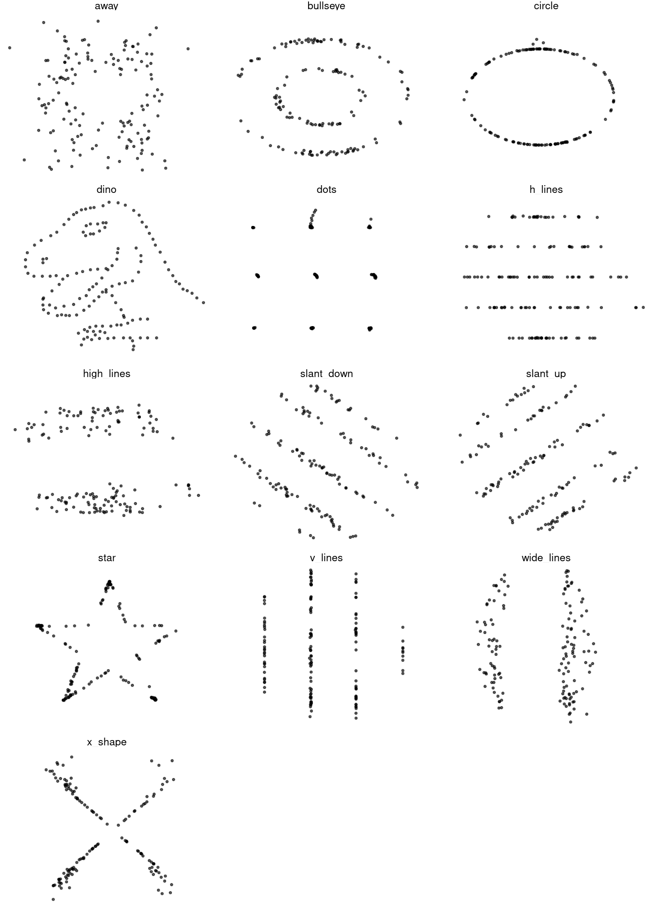
Figure 11.14: The datasaurus_dozen: thirteen datasets with identical summary statistics but very different shapes.
One of the thirteen datasets is literally a dinosaur. The message is clear: always plot your data. A single number like the correlation coefficient can make fundamentally different relationships look identical. Visualisation is not an optional extra after the numbers; it is an essential part of understanding data.
11.2.4 John Snow and the cholera map
In the summer of 1854, a cholera outbreak killed over 500 people in ten days in the Soho district of London. At the time, the prevailing theory was that cholera spread through bad air (the “miasma” theory). The physician John Snow was sceptical.
Snow plotted the deaths on a street map of Soho and marked the locations of the neighbourhood’s public water pumps. The spatial pattern was unmistakable: deaths clustered tightly around a single pump on Broad Street.
library(HistData)
ggplot() +
geom_point(
data = Snow.deaths,
aes(x, y),
size = 1,
alpha = 0.5
) +
geom_point(
data = Snow.pumps,
aes(x, y),
shape = 3,
size = 4,
stroke = 1.5,
colour = "firebrick"
) +
coord_equal() +
theme_void() +
labs(
title = "John Snow's cholera map, Soho 1854",
caption = "Dots: cholera deaths | Red crosses: water pumps"
)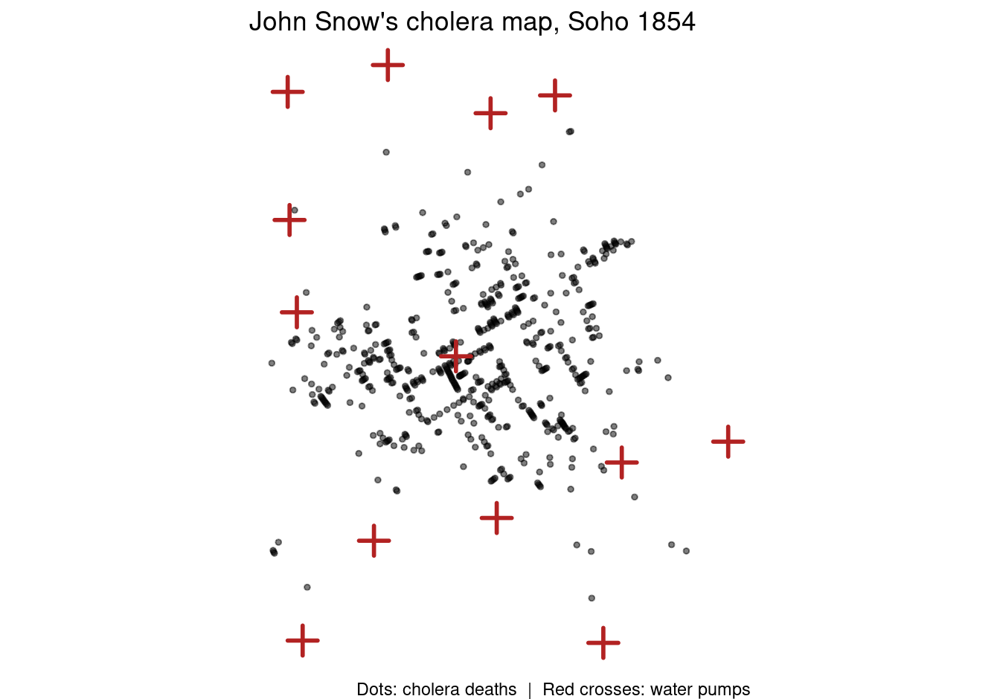
Figure 11.15: John Snow’s 1854 cholera data: deaths (dots) and water pump locations (red crosses).
Snow persuaded local authorities to remove the handle from the Broad Street pump, and the outbreak subsided. His map is widely regarded as one of the founding moments of both epidemiology and data visualisation: the spatial pattern in the data made the case that no table of death counts could have made so immediately.
Today, geospatial tools like sf and leaflet (Chapters 9 and
10) allow us to reproduce and extend this kind of analysis in
minutes. The 2003 SARS outbreak, the 2014–2016 Ebola crisis, and the 2020
COVID-19 pandemic were all tracked with real-time geospatial dashboards that
owe a conceptual debt to Snow’s hand-drawn map. The crucial ingredient is the
same in every case: cases (or deaths, or test results) paired with a location,
in a format that can be plotted.
11.2.5 What makes a good visualisation?
The statistician and information designer Edward Tufte codified many of the principles underlying good data visualisation in his 1983 book The Visual Display of Quantitative Information. His ideas remain the most widely cited framework in the field and form a useful checklist when evaluating your own plots.
Data-ink ratio
Tufte’s central concept is the data-ink ratio: the proportion of the ink (or pixels) on a chart that actually conveys data information, as opposed to decorative or redundant elements. A high data-ink ratio is desirable.
\[\text{Data-ink ratio} = \frac{\text{data ink}}{\text{total ink used to print the graphic}}\]
In ggplot2 terms, theme_minimal() and theme_classic() move towards higher
data-ink ratios by removing background fills and redundant grid lines. As a
rule, removing unnecessary elements is more effective than adding decoration.
Chart junk
Chart junk is Tufte’s term for visual elements that clutter a graphic without contributing to understanding: three-dimensional effects on 2D data, decorative hatching, unnecessary grid lines, and ornamental borders. These elements consume ink, distract the eye, and often distort the data.
The ggplot2 defaults are already fairly clean, but watch for:
- 3D bar or pie charts (never use these for data that is not inherently three-dimensional)
- Gradient fills on bars or backgrounds
- Grid lines so dense they compete with the data
Lie factor
The lie factor is the ratio of the visual effect size to the true data effect size:
\[\text{Lie factor} = \frac{\text{size of effect shown in graphic}}{\text{size of effect in data}}\]
A lie factor of 1 is ideal. Values greater than 1 exaggerate differences; values less than 1 understate them. The most common source of inflated lie factors in practice is a truncated \(y\)-axis: starting a bar chart at a non-zero baseline makes a 10% change look like a 300% change, because the bars can now only be compared by their tops, not their areas.
Small multiples
Small multiples (Tufte’s term for what ggplot2 calls facets) display
the same graphical form repeated for different subsets of data. Because the
reader’s eye can compare across panels without re-learning the visual encoding,
small multiples are often more effective than a single busy chart with many
overlapping series. Chapters 5 and 8 used
facet_wrap() extensively for exactly this reason.
Data density
Related to the data-ink ratio is data density: the amount of information per unit of display area. Tufte’s own “sparkline” is an extreme example — a tiny inline time-series the size of a word, embedded directly in text. In practice, the principle encourages:
- choosing compact geoms (e.g., a boxplot rather than a bar chart with error bars) when the data support them;
- avoiding excessive whitespace or padding; and
- using facets to show more comparisons in the same area.
Summary
| Principle | Practical rule |
|---|---|
| Data-ink ratio | Remove anything that does not convey data |
| Chart junk | Avoid 3D effects, decorative fills, dense grids |
| Lie factor | \(\approx 1\): don’t exaggerate or understate; start axes at zero for bar charts |
| Small multiples | Facet rather than overcrowd a single panel |
| Data density | Pack information efficiently without clutter |
Tufte’s principles are prescriptive rather than absolute. There are contexts — public-facing infographics where visual engagement matters — where some decoration is justified. But as a default starting point, these rules consistently produce clearer, more honest, and more informative graphics.